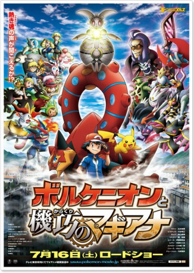

IMDB-Wertung: 6.2 / 10
IMDB-Wertung: 6.2 / 10  Metascore:
Metascore: 
A mystical Pokémon by the name of Volcano must accept Ash's help to rescue the Azoth Kingdom
Alternativ: Pokemon 19 the Movie: Volcanion and the Mechanical Marvel (Englischer Titel)
 IMDB-Wertung: 6.2 / 10 Metascore:
A mystical Pokémon by the name of Volcano must accept Ash's help to rescue the Azoth Kingdom
Jahr: 2016
Dauer: 90 Minuten
FSK:
Land: Japan Studio: Golden Village PicturesTonspuren:
Untertitel:
Auflösung: 1080p (1920x1080) Größe: 3860 MB
Genre: Action, Abenteuer, Fantasy, Animation/Trick, Familie
Regisseur: Kunihiko Yuyama
Drehbuch: Matt Duffer
Soundtrack:
Darsteller:
 Sarah Natochenny als Ash
Sarah Natochenny als Ash Alyson Leigh Rosenfeld als Bonnie / Bunnelby
Alyson Leigh Rosenfeld als Bonnie / Bunnelby Erica Schroeder als Pancham / Sylveon
Erica Schroeder als Pancham / Sylveon Billy Bob Thompson als Greninja
Billy Bob Thompson als Greninja James Carter Cathcart als James / Meowth
James Carter Cathcart als James / Meowth Kiyotaka Furushima als Fiarrow
Kiyotaka Furushima als Fiarrow Megumi Hayashibara als Musashi / Tairenar
Megumi Hayashibara als Musashi / Tairenar Inuko Inuyama als Nyarth
Inuko Inuyama als Nyarth Unshô Ishizuka als Narrator
Unshô Ishizuka als Narrator Michele Knotz als Jessie
Michele Knotz als Jessie Rica Matsumoto als Satoshi
Rica Matsumoto als Satoshi Shin'ichirô Miki als Kojio / Luchabull
Shin'ichirô Miki als Kojio / Luchabull Rodger Parsons als Narrator
Rodger Parsons als Narrator H.D. Quinn als Hawlucha
H.D. Quinn als Hawlucha Yûji Ueda als Gekkouga
Yûji Ueda als Gekkouga Kôichi Yamadera als Jarvis
Kôichi Yamadera als JarvisDatei: X:\Kinder Anime\Pokémon\Pokémon 19 - Volcanion und das mechanische Wunderwerk (2016, FSK, 1920x1080).mkv seit 28.12.2016
Festplatte: Kinder-Filme+Trick
 Es gibt insgesamt 23 Filme in der Gruppe 'Kinder Anime\Pokémon'
Es gibt insgesamt 23 Filme in der Gruppe 'Kinder Anime\Pokémon'